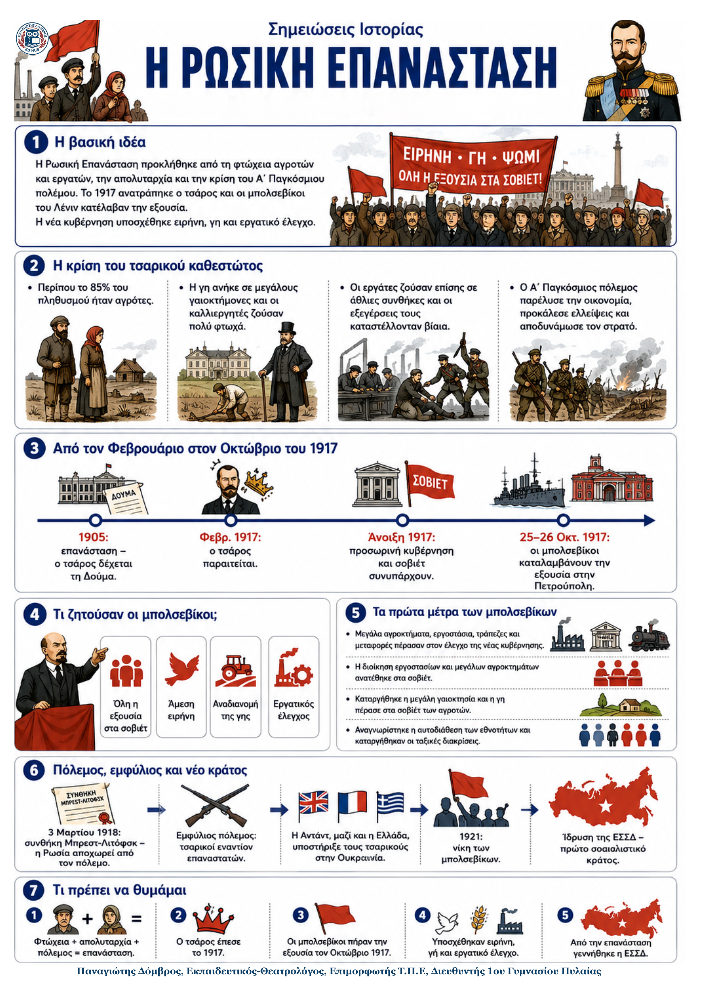

Δεν βρέθηκε η λέξη ή η φράση μέσα στην ενότητα.
1Η βασική ιδέα
Η Ρωσική Επανάσταση προκλήθηκε από τη φτώχεια αγροτών και εργατών, την απολυταρχία και την κρίση του Α΄ Παγκόσμιου πολέμου. Το 1917 ανατράπηκε ο τσάρος και οι μπολσεβίκοι του Λένιν κατέλαβαν την εξουσία. Η νέα κυβέρνηση υποσχέθηκε ειρήνη, γη και εργατικό έλεγχο.
21. Η κρίση του τσαρικού καθεστώτος
- Περίπου το 85% του πληθυσμού ήταν αγρότες. Η γη ανήκε σε μεγάλους γαιοκτήμονες και οι καλλιεργητές ζούσαν πολύ φτωχά.
- Οι εργάτες ζούσαν επίσης σε άθλιες συνθήκες και οι εξεγέρσεις τους καταστέλλονταν βίαια.
- Η ήττα στον ρωσοϊαπωνικό πόλεμο και η επανάσταση του 1905 ανάγκασαν τον τσάρο να δεχτεί τη Δούμα, αλλά όχι να εγκαταλείψει την απολυταρχία.
- Ο Α΄ Παγκόσμιος πόλεμος παρέλυσε την οικονομία, προκάλεσε ελλείψεις και αποδυνάμωσε τον στρατό.
32. Από τον Φεβρουάριο στον Οκτώβριο του 1917
- Φεβρουάριος: ο τσάρος παραιτήθηκε. Δημιουργήθηκαν μια προσωρινή κυβέρνηση και τα σοβιέτ, συμβούλια εργατών και στρατιωτών.
- Η προσωρινή κυβέρνηση αναγνώρισε δικαιώματα, αλλά συνέχισε τον πόλεμο και δεν μοίρασε τη γη. Η δυσαρέσκεια μεγάλωσε.
- Οι μπολσεβίκοι, με αρχηγό τον Λένιν, ζητούσαν «όλη η εξουσία στα σοβιέτ», άμεση ειρήνη και αναδιανομή της γης.
- 25–26 Οκτωβρίου: οι μπολσεβίκοι κατέλαβαν την εξουσία στην Πετρούπολη. Η επανάσταση επικράτησε.
43. Τα πρώτα μέτρα των μπολσεβίκων
- Μεγάλα αγροκτήματα, εργοστάσια, τράπεζες και μεταφορές πέρασαν στον έλεγχο της νέας κυβέρνησης.
- Η διοίκηση εργοστασίων και μεγάλων αγροκτημάτων ανατέθηκε στα σοβιέτ.
- Καταργήθηκε η μεγάλη γαιοκτησία και η γη πέρασε στα σοβιέτ των αγροτών.
- Αναγνωρίστηκε η αυτοδιάθεση των εθνοτήτων και καταργήθηκαν οι ταξικές διακρίσεις.
54. Πόλεμος, εμφύλιος και νέο κράτος
- Με τη συνθήκη του Μπρεστ-Λιτόφσκ (3 Μαρτίου 1918) η Ρωσία αποχώρησε από τον πόλεμο, παραχωρώντας πολλά εδάφη στη Γερμανία.
- Στον εμφύλιο συγκρούστηκαν τσαρικοί και επαναστάτες. Η Αντάντ, μαζί και η Ελλάδα, υποστήριξε τους τσαρικούς στην Ουκρανία.
- Το 1921 επικράτησαν οι μπολσεβίκοι. Αργότερα ιδρύθηκε η Ένωση Σοβιετικών Σοσιαλιστικών Δημοκρατιών (ΕΣΣΔ).
6Τι πρέπει να θυμάμαι
• Η φτώχεια, η απολυταρχία και ο πόλεμος οδήγησαν στην πτώση του τσάρου. • Το 1917 επικράτησαν οι μπολσεβίκοι· υποσχέθηκαν ειρήνη και γη και αργότερα ιδρύθηκε η ΕΣΣΔ.
